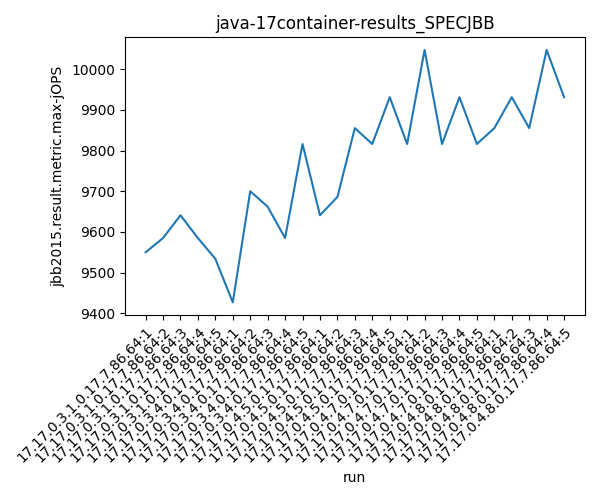
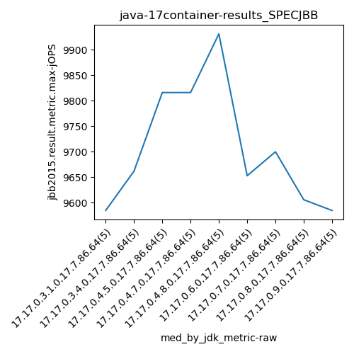
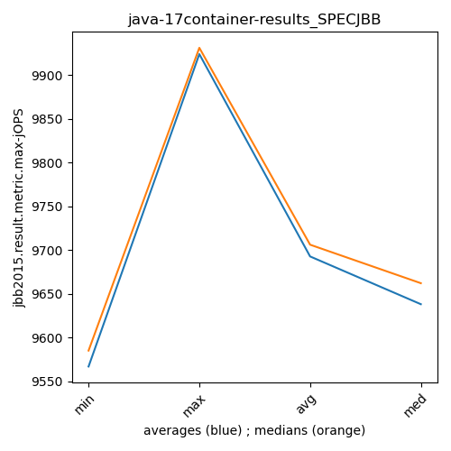
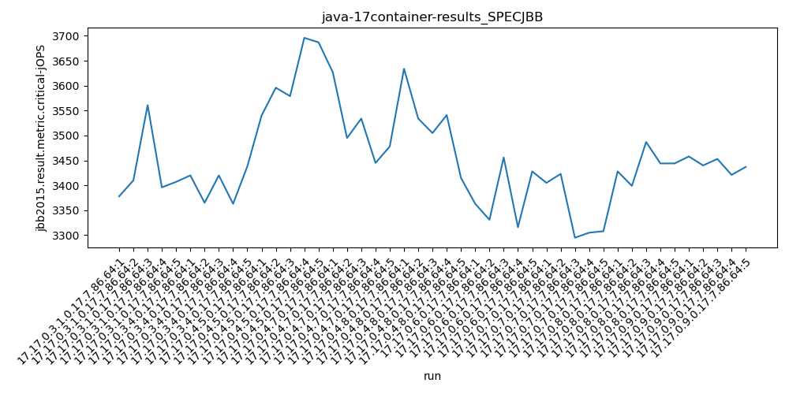
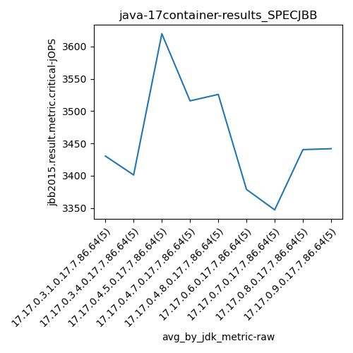
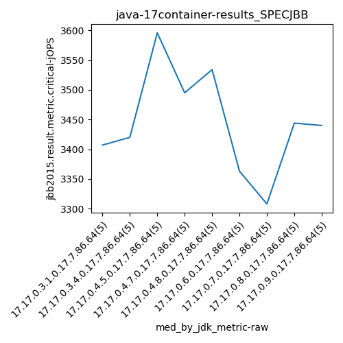
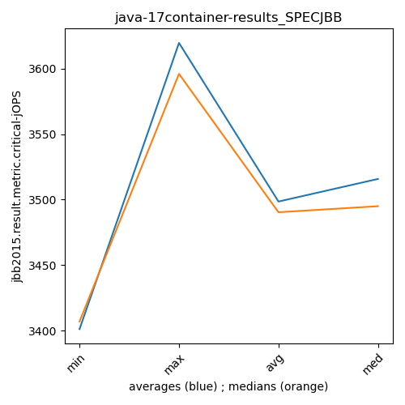

java-17 SPECJBB
Context at bottom
/home/jvanek/git/benchmarks-in-nested-virtualisation-toolchain/final_results/container_results/container-results_J2DBENCH
java-17
SPECJBB
/home/jvanek/git/benchmarks-in-nested-virtualisation-toolchain/final_results/container_results/container-results_RADARGUNs3
java-17
SPECJBB
/home/jvanek/git/benchmarks-in-nested-virtualisation-toolchain/final_results/container_results/container-results_RADARGUNs1
java-17
SPECJBB
/home/jvanek/git/benchmarks-in-nested-virtualisation-toolchain/final_results/container_results/container-results_DACAPO
java-17
SPECJBB
/home/jvanek/git/benchmarks-in-nested-virtualisation-toolchain/final_results/container_results/container-results_SPECJBB
java-17
SPECJBB
container-results_SPECJBB
- container-results_SPECJBB - max-jops
- container-results_SPECJBB - critical jops
container-results_SPECJBB - max-jops
Expected number of java-17 JDKs: 9
1st avgmed_alljdks_metric:
/home/jvanek/git/benchmarks-in-nested-virtualisation-toolchain/final_results/result_processing.py /home/jvanek/git/benchmarks-in-nested-virtualisation-toolchain/final_results/container_results/container-results_SPECJBB jbb2015.result.metric.max-jOPS False
values: [9550, 9585, 9641, 9585, 9534, 9427, 9700, 9662, 9585, 9816, 9641, 9686, 9855, 9816, 9931, 9816, 10047, 9816, 9931, 9816, 9855, 9931, 9855, 10047, 9931, 9700, 9354, 9427, 9653, 9700, 9855, 9534, 9700, 9700, 9469, 9700, 9606, 9585, 9748, 9427, 9585, 9700, 9748, 9469, 9447]

Expected number of iterations: 5
final number of values: 45 out of 45
Pass rate: 100.0%
values: (9354, 10047, 9692.577777777778, 9700)

** accuracy from all jdks and runs
more is better
MIN: 9354
MAX: 10047
AVG: 9692.577777777778
MED: 9700
Relative differences 1:
MIN-MAX: 7.0 %
MIN-AVG: 3.0 %
MIN-MED: 4.0 %
MAX-MIN: -7.0 %
MAX-AVG: -4.0 %
MAX-MED: -4.0 %
AVG-MED: 0.0 %
stored to java-17.properties. sort | uniq that!
2nd avgmed_by_jdk_metric:
values: [9579.0, 9638.0, 9785.8, 9885.2, 9923.8, 9566.8, 9651.6, 9613.2, 9589.8]

values: [9585, 9662, 9816, 9816, 9931, 9653, 9700, 9606, 9585]

values: (9566.8, 9923.8, 9692.577777777777, 9638.0)
values: (9585, 9931, 9706.0, 9662)

** accuracy from all jdks where runs were avged
more is better
MIN: 9566.8
MAX: 9923.8
AVG: 9692.577777777777
MED: 9638.0
Relative differences 1:
MIN-MAX: 4.0 %
MIN-AVG: 1.0 %
MIN-MED: 1.0 %
MAX-MIN: -4.0 %
MAX-AVG: -2.0 %
MAX-MED: -3.0 %
AVG-MED: -1.0 %
stored to java-17.properties. sort | uniq that!
** accuracy from all jdks where runs were medianed
more is better
MIN: 9585
MAX: 9931
AVG: 9706.0
MED: 9662
Relative differences 1:
MIN-MAX: 3.0 %
MIN-AVG: 1.0 %
MIN-MED: 1.0 %
MAX-MIN: -4.0 %
MAX-AVG: -2.0 %
MAX-MED: -3.0 %
AVG-MED: -0.0 %
stored to java-17.properties. sort | uniq that!
container-results_SPECJBB - critical jops
Expected number of java-17 JDKs: 9
1st avgmed_alljdks_metric:
/home/jvanek/git/benchmarks-in-nested-virtualisation-toolchain/final_results/result_processing.py /home/jvanek/git/benchmarks-in-nested-virtualisation-toolchain/final_results/container_results/container-results_SPECJBB jbb2015.result.metric.critical-jOPS False
values: [3378, 3410, 3561, 3396, 3407, 3420, 3365, 3420, 3363, 3438, 3540, 3596, 3579, 3696, 3687, 3627, 3495, 3534, 3445, 3478, 3634, 3534, 3505, 3541, 3415, 3363, 3331, 3456, 3316, 3428, 3405, 3423, 3295, 3305, 3308, 3428, 3399, 3487, 3444, 3444, 3458, 3440, 3453, 3421, 3437]

Expected number of iterations: 5
final number of values: 45 out of 45
Pass rate: 100.0%
values: (3295, 3696, 3455.6666666666665, 3438)

** accuracy from all jdks and runs
more is better
MIN: 3295
MAX: 3696
AVG: 3455.6666666666665
MED: 3438
Relative differences 1:
MIN-MAX: 11.0 %
MIN-AVG: 5.0 %
MIN-MED: 4.0 %
MAX-MIN: -12.0 %
MAX-AVG: -7.0 %
MAX-MED: -8.0 %
AVG-MED: -1.0 %
stored to java-17.properties. sort | uniq that!
2nd avgmed_by_jdk_metric:
values: [3430.4, 3401.2, 3619.6, 3515.8, 3525.8, 3378.8, 3347.2, 3440.4, 3441.8]

values: [3407, 3420, 3596, 3495, 3534, 3363, 3308, 3444, 3440]

values: (3347.2, 3619.6, 3455.6666666666665, 3440.4)
values: (3308, 3596, 3445.222222222222, 3440)

** accuracy from all jdks where runs were avged
more is better
MIN: 3347.2
MAX: 3619.6
AVG: 3455.6666666666665
MED: 3440.4
Relative differences 1:
MIN-MAX: 8.0 %
MIN-AVG: 3.0 %
MIN-MED: 3.0 %
MAX-MIN: -8.0 %
MAX-AVG: -5.0 %
MAX-MED: -5.0 %
AVG-MED: -0.0 %
stored to java-17.properties. sort | uniq that!
** accuracy from all jdks where runs were medianed
more is better
MIN: 3308
MAX: 3596
AVG: 3445.222222222222
MED: 3440
Relative differences 1:
MIN-MAX: 8.0 %
MIN-AVG: 4.0 %
MIN-MED: 4.0 %
MAX-MIN: -9.0 %
MAX-AVG: -4.0 %
MAX-MED: -5.0 %
AVG-MED: -0.0 %
stored to java-17.properties. sort | uniq that!
/home/jvanek/git/benchmarks-in-nested-virtualisation-toolchain/final_results/container_results/container-results_JMH
java-17
SPECJBB
pass rates:
container-results_SPECJBB=100.0%
Context:
- container_results
- SPECJBB